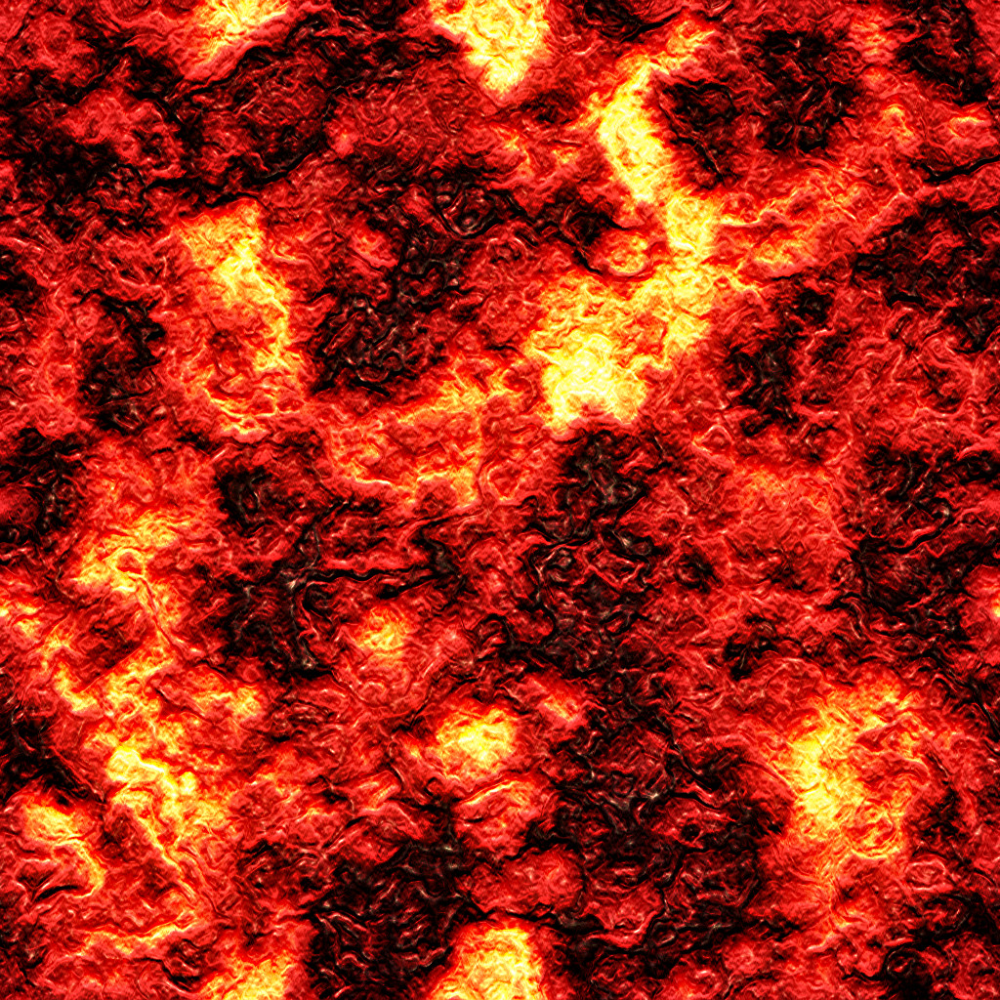
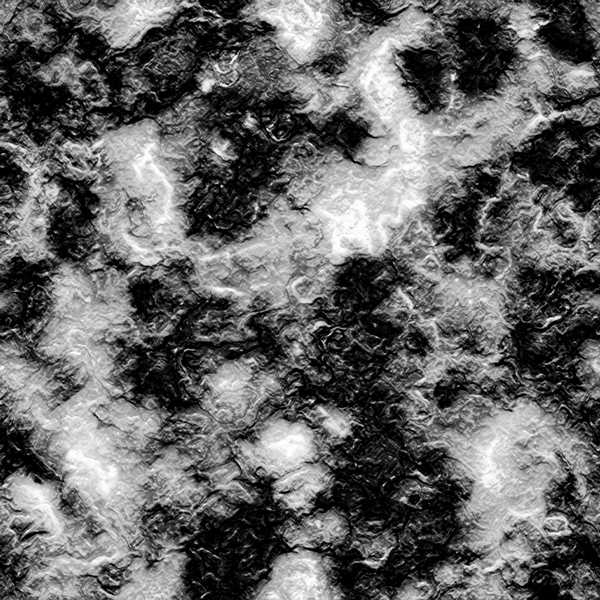

UNITY 3D - Cool Stuff UNITY 3D - Cool Stuff
This tutorial covers modules for specific, interesting game scenarios.
|
CARRY A STACK OF OBJECTS
In a Unity 3D scene, given the 3D character, we make it able to pick up objects with a weight limit, and score by the total weight of the objects returned to home base:
[STEP 1] SET UP OBJECTS: Before we add scripts, make ther objects:
Create a Third-Person character controller: (see
Third-Person Character tutorial). Create three Empty Game Objects, name them (objSlot1, objSlot2, objSlot3), and parent them to the Player Character.
Create a Canvas (for scoring): Create an Empty Canvas and add a Text object. Position and size as desired, name it Player Score.
Create a GameHandler: Create an Empty Game Object, name it GameHandler.
Create a HomeBase (to bring back objects): Drag your mesh into the Hierarchy (or make a Cylinder). Add a BoxCollider and create and apply the TAG HomeBase.
Create Pickups: Create an Empty Game Object, name it PickupA. Drag your mesh into the Hierarchy (or make a cube) and parent it below PickupA. Make sure the child has no colliders, and add to the parent a BoxCollider (adjust size to surround mesh) and a Rigidbody. Create and Apply LAYER 10: PickUps.
[STEP 2] ADD C# SCRIPTS:
a) Add this script to PickUps to designate the object weight::
PickUp.cs:
using System.Collections;
using System.Collections.Generic;
using UnityEngine;
public class PickUp : MonoBehaviour {
public int objWeight; //Set weight value in Inspector for each object type prefab
} |
b) Add this script to the GameHandler, to track the score and update the Canvas Text object with it.
Once updated in Unity, add the canvas Text object to the Inspector script slot.
GameHandlerScript.cs:
using System.Collections;
using System.Collections.Generic;
using UnityEngine;
using UnityEngine.UI;
public class GameHandlerScript : MonoBehaviour {
public static int playerScore;
public GameObject playerScoreText;
void Start () {
updateScore(playerScore);
}
public void updateScore (int newScore) {
playerScore += newScore;
Text scoreTextPlayer = playerScoreText.GetComponent<Text>();
scoreTextPlayer.text = "Score: " + playerScore);
}
}
}
|
NOTE: Want to make this multiplayer? Duplicate the score and text variables as well as the Start call to updateScore. Give updateScore a second argument: a string for the player name, and test against this string to determine which player's score gets updated!
c) Add this script to the Player, to manage the interactions with the pickups.
Drag the GameHandler into the script slot.
Drag each of the three objSlot Game Objects into their script slots.
Draasdad.
PlayerPickup.cs:
using System.Collections;
using System.Collections.Generic;
using UnityEngine;
public class PlayerPickup : MonoBehaviour {
public GameHandlerScript gameHandler;
public int carryCapacity = 3;
public int currentLoad;
public Transform pickupSlot1;
public Transform pickupSlot2;
public Transform pickupSlot3;
private GameObject slot1Pickup;
private GameObject slot2Pickup;
private GameObject slot3Pickup;
private GameObject CurrentPickup;
private bool slot1isOpen = true;
private bool slot2isOpen = true;
private bool slot3isOpen = true;
void OnTriggerEnter (Collider other) {
if (other.gameObject.layer == 10) {
CurrentPickup = other.gameObject;
PickUpThing();
}
if (other.gameObject.tag == "HomeBase") {
PutDownThing();
}
}
public void PickUpThing(){
int availCapacity = carryCapacity - currentLoad;
int objWeightTemp = CurrentPickup.GetComponent
().objWeight;
if (availCapacity >= objWeightTemp){
if (slot1isOpen == true){
currentLoad += objWeightTemp;
CurrentPickup.transform.parent = pickupSlot1;
CurrentPickup.transform.position = pickupSlot1.position;
CurrentPickup.GetComponent<Rigidbody>().isKinematic = true;
CurrentPickup.GetComponent<Collider>().enabled = false;
slot1Pickup = CurrentPickup;
slot1isOpen = false;
Debug.Log("slot 3 filled! \n current load weight = " + currentLoad);
}
else if (slot2isOpen == true){
currentLoad += objWeightTemp;
CurrentPickup.transform.parent = pickupSlot2;
CurrentPickup.transform.position = pickupSlot2.position;
CurrentPickup.GetComponent<Rigidbody>().isKinematic = true;
CurrentPickup.GetComponent<Collider>().enabled = false;
slot2Pickup = CurrentPickup;
slot2isOpen = false;
Debug.Log("slot 2 filled! \n current load weight = " + currentLoad);
}
else if (slot3isOpen == true){
currentLoad += objWeightTemp;
CurrentPickup.transform.parent = pickupSlot3;
CurrentPickup.transform.position = pickupSlot3.position;
CurrentPickup.GetComponent<Rigidbody>().isKinematic = true;
CurrentPickup.GetComponent<Collider>().enabled = false;
slot3Pickup = CurrentPickup;
slot3isOpen = false;
Debug.Log("slot 3 filled! \n current load weight = " + currentLoad);
}
}
else {
Debug.Log("Your load is too heavy to get that. \n Current weight: " + currentLoad);
}
}
public void PutDownThing(){
if (slot3isOpen == false){
Destroy(slot3Pickup.gameObject);
slot3isOpen = true;
Debug.Log("slot 3 emptied! \n curent load weight = " + currentLoad);
}
if (slot2isOpen == false){
Destroy(slot2Pickup.gameObject);
slot2isOpen = true;
Debug.Log("slot 2 emptied! \n curent load weight = " + currentLoad);
}
if (slot1isOpen == false){
Destroy(slot1Pickup.gameObject);
slot1isOpen = true;
Debug.Log("slot 1 emptied! \n curent load weight = " + currentLoad);
}
gameHandler.GetComponent
().updateScore(currentLoad);
currentLoad = 0;
Debug.Log("Curent load weight = " + currentLoad);
}
}
|
|
 GENERATE RANDOM KEYS
GENERATE RANDOM KEYS
VERSION 1 (intended for two player): Hit the displayed key before the other player:
[STEP 1] SET UP OBJECTS:
a) Create a GameObject > UI > Canvas.
b) Add two GameObject > UI > Text objects, size larger as desired.
c) Create an Empty Game Object, name it GameHandler.
[STEP 2] SET UP OBJECTS (intended for two player):
Add this script to the GameHandler:
KeyClasher.cs:
using System.Collections;
using System.Collections.Generic;
using UnityEngine;
using UnityEngine.UI;
public class
KeyClasher : MonoBehaviour {
//public GameObject player1;
//public GameObject player2;
public GameObject p1KeyText;
public GameObject p2KeyText;
public char p1CurrentKey;
public char p2CurrentKey;
private string p1Keys;
private string p2Keys;
public float comboSpeed = 0.9f;
private float p1HitTime;
private float p1TimeA;
private float p1TimeB;
private float p2HitTime;
private float p2TimeA;
private float p2TimeB;
void Start(){
p1Keys = "qwertasdfgzxc";
p2Keys = "yuiophjklvbnm";
Player1NewKey();
Player2NewKey();
}
void FixedUpdate(){
KeyCode p1KeyCode = (KeyCode) System.Enum.Parse(typeof(KeyCode), p1CurrentKey.ToString()) ;
KeyCode p2KeyCode = (KeyCode) System.Enum.Parse(typeof(KeyCode), p2CurrentKey.ToString()) ;
if (Input.GetKey(p1KeyCode)){
p1TimeB = Time.time;
p1HitTime = p1TimeB - p1TimeA;
Attack(1, p1HitTime);
Player1NewKey();
p1TimeA = p1TimeB;
}
if (Input.GetKey(p2KeyCode)){
p2TimeB = Time.time;
p2HitTime = p2TimeB - p2TimeA;
Attack(2, p2HitTime);
Player2NewKey();
p2TimeA = p2TimeB;
}
}
public void Player1NewKey(){
p1CurrentKey = p1Keys[Random.Range(0, p1Keys.Length)];
p1CurrentKey = System.Char.ToUpper(p1CurrentKey);
Text p1Keytemp = p1KeyText.GetComponent
();
p1Keytemp.text = "HIT: " + p1CurrentKey;
}
public void Player2NewKey(){
p2CurrentKey = p2Keys[Random.Range(0, p2Keys.Length)];
p2CurrentKey = System.Char.ToUpper(p2CurrentKey);
Text p2Keytemp = p2KeyText.GetComponent
();
p2Keytemp.text = "HIT: " + p2CurrentKey;
}
public void Attack(int playerNum, float speed){
// GameObject thePlayer;
// if (playerNum == 1){ thePlayer = player1;}
// else { thePlayer = player2;}
// if (speed >= comboSpeed) {
// thePlayer.attackBasic((Random.Range(1,3)).ToInt()) //1 of 3 possible attacks
// }
// else {thePlayer.attackCombo(1)} //add +1 to combo, hits with more force
Debug.Log ("player " + playerNum + "attacks! \n Speed interval: " + speed);
}
}
//source for array: https://answers.unity.com/questions/800488/random-char-a-to-z.html
//source for timer: https://answers.unity.com/questions/1156608/random-keys-combo.html
|
(IN PROGRESS:)
VERSION 2 (intended for one player): Hit the displayed key to move the player:
[STEP 1] SET UP OBJECTS:
a) Create top-down Tilemap environment and a top-down Player Character.
b) Create a GameObject > UI > Canvas. Make it local, sized to the 9 grids around Player, parent to the Player.
c) Add four GameObject > UI > Text objects. Size 24, then shrink (using scale tool) to the grids around Player.
[STEP 2] Add script:
Add this script to the Player:
KeyClasherPlayerMove.cs:
using System.Collections;
using System.Collections.Generic;
using UnityEngine;
using UnityEngine.UI;
public class KeyClasher : MonoBehaviour {
//public GameObject player1;
public GameObject p1KeyText;
public char p1CurrentKey;
private string p1Keys;
public float comboSpeed = 0.9f;
private float p1HitTime;
private float p1TimeA;
private float p1TimeB;
void Start(){
p1Keys = "qwertasdfgzxcyuiophjklvbnm";
Player1NewKey();
}
void FixedUpdate(){
KeyCode p1KeyCode = (KeyCode) System.Enum.Parse(typeof(KeyCode), p1CurrentKey.ToString()) ;
if (Input.GetKey(p1KeyCode)){
p1TimeB = Time.time;
p1HitTime = p1TimeB - p1TimeA;
Attack(1, p1HitTime);
Player1NewKey();
p1TimeA = p1TimeB;
}
}
public void Player1NewKey(){
p1CurrentKey = p1Keys[Random.Range(0, p1Keys.Length)];
p1CurrentKey = System.Char.ToUpper(p1CurrentKey);
Text p1Keytemp = p1KeyText.GetComponent
();
p1Keytemp.text = "HIT: " + p1CurrentKey;
}
public void Attack(int playerNum, float speed){
// GameObject thePlayer;
// if (playerNum == 1){ thePlayer = player1;}
// else { thePlayer = player2;}
// if (speed >= comboSpeed) {
// thePlayer.attackBasic((Random.Range(1,3)).ToInt()) //1 of 3 possible attacks
// }
// else {thePlayer.attackCombo(1)} //add +1 to combo, hits with more force
Debug.Log ("player " + playerNum + "attacks! \n Speed interval: " + speed);
}
}
//source for array: https://answers.unity.com/questions/800488/random-char-a-to-z.html
//source for timer: https://answers.unity.com/questions/1156608/random-keys-combo.html
|
|
ROCKET SHIP TOUR
[STEP 1] SET UP OBJECTS:
a) Create an object to be your Rocketship (import custom mesh or use a Unity cylinder). Add a Rigidbody and a BoxCollider that surrounds the Rocketship, set to isTrigger.
b) Create an object to be your ShipYard (custom mesh or Unity cube). Locate at world center.
c) Create an object to be your Waypoint1 (custom mesh or Unity cube). Create and Apply LAYER 9: Waypoints. Drag Waypoint1 into the Project panel to make it a prefab, then duplicate in scene and position as desired to make the path the Rocketship will travel (this script uses 7 waypoints, can of course be changed).
[STEP 2] Add scripts:
a) Add this script to the Rocketship:
RocketPath.cs:
using System.Collections;
using System.Collections.Generic;
using UnityEngine;
using UnityEngine.UI;
public class RocketPath : MonoBehaviour {
public Transform StartingLine;
public Transform Waypoint1;
public Transform Waypoint2;
public Transform Waypoint3;
public Transform Waypoint4;
public Transform Waypoint5;
public Transform Waypoint6;
public Transform Waypoint7;
private Transform currentLoc;
private Transform nextLoc;
public float moveSpeed = 2f;
public float rotationSpeed = 5f;
public Vector3 offset;
public Rigidbody rb;
void Start(){
rb = GetComponent
();
currentLoc = StartingLine;
transform.position = currentLoc.position;
moveShip();
}
void Update(){
//LERP rotation
Vector3 relativePos = nextLoc.position - transform.position;
Quaternion toRotation = Quaternion.LookRotation(relativePos);
transform.rotation = Quaternion.Lerp( transform.rotation, toRotation, rotationSpeed * Time.deltaTime );
//LERP movement
Vector3 newPos = nextLoc.position + offset;
Vector3 smoothPos = Vector3.Lerp (transform.position, newPos, moveSpeed * Time.deltaTime);
transform.position = smoothPos;
}
public void OnTriggerEnter(Collider other){
if (other.gameObject.layer == 9){
Debug.Log("Hit a waypoint!");
moveShip();
}
}
public void moveShip(){
//Transform ShipYard = transform.position;
if (nextLoc == Waypoint1){ currentLoc = Waypoint1; nextLoc = Waypoint2; }
else if (nextLoc == Waypoint2){ currentLoc = Waypoint2; nextLoc = Waypoint3; }
else if (nextLoc == Waypoint3){ currentLoc = Waypoint3; nextLoc = Waypoint4; }
else if (nextLoc == Waypoint4){ currentLoc = Waypoint4; nextLoc = Waypoint5; }
else if (nextLoc == Waypoint5){ currentLoc = Waypoint5; nextLoc = Waypoint6; }
else if (nextLoc == Waypoint6){ currentLoc = Waypoint6; nextLoc = Waypoint7; }
else if (nextLoc == Waypoint7){ currentLoc = Waypoint7; nextLoc = StartingLine; }
else if (currentLoc == StartingLine){ nextLoc = Waypoint1; }
//transform.LookAt (nextLoc);
Debug.Log("leaving: " + currentLoc + "\n heading towards:" + nextLoc);
}
}
//research: https://youtu.be/RkrC0PopskM
//A* algorithm
|
b) Add this script to the MainCamera.
Drag the Rocketship into the target script slot.
Set offset for the distance the ship should maintain from each Waypoint.
Camera3DLERP.cs:
using UnityEngine;
public class Camera3DLERP : MonoBehaviour {
public Transform target; // drag intended target object into the Inspector slot
public float smoothSpeed = 10f;
public Vector3 offset; // set the offset in the editor
void FixedUpdate () {
Vector3 newPos = target.position + offset;
Vector3 smoothPos = Vector3.Lerp (transform.position, newPos, smoothSpeed * Time.deltaTime);
transform.position = smoothPos;
transform.LookAt (target);
}
} |
|
DRAGON NPC
SUMMARY: This script is to make the basic behavior of a Dragon enemy NPC that flies around the gamespace and occasionally attacks the players.
[STEP 1] Create the flight targets and Dragon:
a) Create a GameObject > Empty Game Object, name it DragonTargetLook. Place it at the center of the intended flight circle.
b) Create another Empty Game Object, name it DragonTargetFly. Place it at the intended distance from and above the DragonTargetLook, at the radius of the intended flight circle.
c) Create another Empty Game Object, name it Dragon. Reset Transforms to locate at world center. Add Component a RigidBody (freeze X and Z rotation ounder constrain) and a BoxCollider.
d) Create a 3D Object > Cube. Scale 3x3x3. Name it "DragonMeshPlaceholder" and reset Transforms.
In the Hierarchy drag the cube onto the Dragon game object to make it a child of Dragon.
e) Duplicate the cube, name it "head", and scale it smaller (1x1x1). In the Scene view, pull it forward on the blue Z-axis in front of the big cube, to show the facing-direction. In the Hierarchy, drag the small cube onto the big cube to make it a child of the big cube.
f) Select the Dragon game object and Add
Component a second BoxCollider, set to isTrigger, and increase just the X and Z scale of the trigger collider for the stopping distance from the targets.
[STEP 2] Create the Dragon Script:
Create a new C# script, name it DragonFlyAttack. Add this script to the Dragon object.
Populate the script slots: add the players, the targets, and the dragon mesh.
DragonFlyAttack.cs:
using System.Collections;
using System.Collections.Generic;
using UnityEngine;
public class
DragonFlyAttack : MonoBehaviour {
//public GameHandler gameHandler; // to send attack info
//public Animator anim;
public Transform FlyTarget;
public Transform FlyTargetLook;
public Transform player1Pos;
public Transform player2Pos;
public Transform dragonMesh;
// FOR RANDOM LOCATIONS INSTEAD OF PLAYERS:
// public Transform DragonNest1;
// public Transform DragonNest2;
// public Transform DragonNest3;
// public Transform DragonNest4;
private bool AttackTimer = true;
public float AttackInterval = 50f; // how long to next attack
public float FlyInterval = 20f; // how long spent on the ground before flying away
private float TimeToAttack;
private float TimeToEndAttack;
private Transform attackLocation;
public float mSpeed = 10f; // this value must be faster than the Intervals, above
public Vector3 offsetAttackPos; // set the offset in the editor
private bool moveToAttack= false;
private bool moveToFly = false;
private bool p1inRange = false;
private bool p2inRange = false;
public float attackRange = 2f;
public bool isGrounded = false;
public bool isCircling = true;
public float flySpeed = 10f;
void Start(){
transform.position = FlyTarget.position;
}
//WE USE Update() for character movement:
void Update(){
if (isCircling == true){
dragonMesh.localEulerAngles = new Vector3(transform.localEulerAngles.x, 90, transform.localEulerAngles.z);
transform.LookAt(FlyTargetLook);
transform.Translate(Vector3.right * flySpeed * Time.deltaTime);
}
else {
dragonMesh.localEulerAngles = new Vector3(transform.localEulerAngles.x, 0, transform.localEulerAngles.z);
}
if (moveToAttack == true){
Vector3 newPos = attackLocation.position + offsetAttackPos;
Vector3 LERPposition = Vector3.Lerp (transform.position, newPos, mSpeed * Time.deltaTime);
transform.position = LERPposition;
transform.LookAt (attackLocation);
}
if (moveToFly == true){
Vector3 newPos = FlyTarget.position;
Vector3 LERPposition = Vector3.Lerp (transform.position, newPos, mSpeed * Time.deltaTime);
transform.position = LERPposition;
transform.LookAt (FlyTargetLook);
}
float DistToPlayer1 = Vector3.Distance(transform.position, player1Pos.position);
float DistToPlayer2 = Vector3.Distance(transform.position, player2Pos.position);
if (DistToPlayer1 <= attackRange){
Debug.Log("I am attacking player 1 for so much damage!");
//anim.SetBool("Attack", true);
//gameHandler.UpdateDamage("Player1", 10);
}
if (DistToPlayer2 <= attackRange){
Debug.Log("I am attacking player 2 for so much damage!");
//anim.SetBool("Attack", true);
//gameHandler.UpdateDamage("Player2", 10);
}
if ((DistToPlayer1 >= attackRange + 0.1f) && (DistToPlayer2 >= attackRange + 0.1f)){
//anim.SetBool("Attack", false);
}
}
// WE USE FixedUpdate() for the timers:
void FixedUpdate() {
//this first timer is while the dragon is orbiting in the air, waiting to fly to a target
if (AttackTimer == true){
TimeToAttack += 0.1f;
//Debug.Log("Time to Start Attack: " + TimeToAttack);
if (TimeToAttack >= AttackInterval){
isCircling = false;
TimeToAttack = 0;
dragonAttack();
AttackTimer = false;
Debug.Log("Attack Starting! Attack Timer = " + AttackTimer);
}
}
//this second timer is while the dragon is on the ground, waiting to fly back to orbit
else if (AttackTimer == false){
TimeToEndAttack += 0.1f;
//Debug.Log("Time to End Attack: " + TimeToEndAttack);
if (TimeToEndAttack >=FlyInterval){
TimeToEndAttack = 0;
dragonFly();
AttackTimer = true;
Debug.Log("Attack ended. Attack Timer = " + AttackTimer);
}
}
}
//USE TRIGGER to reach destinations and end LERP-to-tareget movements
public void OnTriggerEnter(Collider other){
if ((other.gameObject.tag =="Player1") || (other.gameObject.tag == "Player2")){
moveToAttack = false;
isGrounded = true;
}
if (other.gameObject.tag == "FlyStart"){
moveToFly = false;
isCircling = true;
}
}
//FLY FUNCTION
public void dragonFly(){
moveToFly = true;
isGrounded = false;
}
//ATTACK FUNCTION
public void dragonAttack(){
int playerTarget = Random.Range (1, 4);
if ((playerTarget == 1) || (playerTarget == 3)) {
attackLocation = player1Pos;
}
else {
attackLocation = player2Pos;
}
//FOR RANDOM LOCATIONS INSTEAD OF PLAYERS:
//if (playerTarget == 1) {attackLocation = DragonNest1;}
//else if (playerTarget == 2) {attackLocation = DragonNest2;}
//else if (playerTarget == 3) {attackLocation = DragonNest3;}
//else {attackLocation = DragonNest4;}
Debug.Log ("Attacking: " + playerTarget);
moveToAttack = true;
}
//USEFULLY DISPLAY the range of the Dragon's attack when it is selected in the editor
void OnDrawGizmosSelected(){
Gizmos.DrawWireSphere(transform.position, attackRange);
}
}
|
SCRIPT NOTES:
To actually damage players, un-comment the gameHandler sections of this script (top variable and Updates).
To animate the Dragon, add an animated 3D dragon mesh to replace the box under Dragon. This mesh has animation for 3 clips: an idle (10-70), flying (100-130), and an attack (200-320, an breathign fire area-effect attack). Create and add an Animator State Machine to the Dragon Mesh, with the fly clip as default and a boolean parameter for "Attack". Uncomment the "anim" parts of this script, and the hooks will work if their names match the script.Note the commented slots for attack locations to use instead of (or in combination with) player locations.
|
DEATH BY RISING LAVA
SUMMARY: Given one or more characters, create a plane with a lava texture that rises to cause damage to the players.
[STEP 1] Create the Lava and add a script to animate:
a) Create a Game Object > 3D Object > Plane, name it LavaPlane, and remove the MeshCollider component.
b) Add a new Material. Turn on emmisive and add this color texture to both the albedo and emissive slots. Optionally, add the grayscale image to the bump slot.
c) Create a new C# script LavaRise.cs and add to LavaPlane:
|


|
LavaRise.cs:
using System.Collections;
using System.Collections.Generic;
using UnityEngine;
public class
LavaRise : MonoBehaviour {
public float riseSpeed = 2f;
public float stopHeight = 10000f;
//set to the desired stopping height
public float ScrollX = 0.01f;
// texture scroll speeds
public float ScrollY = 0.01f;
void Update(){
//Lava Texture Pan
float OffsetX = Time.time * ScrollX;
float OffsetY = Time.time * ScrollY;
GetComponent
().material.mainTextureOffset = new Vector2(OffsetX, OffsetY);
}
void FixedUpdate(){
//Lava Rise Up
if (transform.position.y <= stopHeight){
transform.Translate(Vector3.up * riseSpeed * Time.deltaTime);
}
}
}
//script for moving an object up (and slamming it back down):
//https://answers.unity.com/questions/509379/make-objects-slowly-go-up-then-slam-down.html
|
[STEP 2] Add a Lava Damage script to Lava:
Create a new C# script called LavaDamage.cs. Add this script to the Lava and drag players into script slots.
This script assumes there is already a damage system in place: a script in your GameHandler called UpdateDamage() which takes two arguments: the player name and the damage amount.
LavaPlayerDamage.cs:
using System.Collections;
using System.Collections.Generic;
using UnityEngine;
public class LavaPlayerDamage : MonoBehaviour {
public GameHandler gameHandler;
public Transform player1;
public Transform player2;
public Transform player3;
public Transform player4;
public int LavaDamage = 10;
public float DamageTime = 0f;
public int damage = 10;
void Update(){
//Check to be sure the player has been added befroe testing its height
if (player1 != null){
if (transform.position.y >= player1.position.y){ burnPlayer("Player1", damage); }
}
if (player2 != null){
if (transform.position.y >= player2.position.y){ burnPlayer("Player2", damage); }
}
if (player3 != null){
if (transform.position.y >= player3.position.y){ burnPlayer("Player3", damage); }
}
if (player4 != null){
if (transform.position.y >= player4.position.y){ burnPlayer("Player4", damage); }
}
}
public void burnPlayer(string player, int damage){
Debug.Log("Ouch! " + player + " got burned by lava for " + damage + " damage!");
gameHandler.UpdateDamage(player, damage);
}
} |
Add to your GameHandler.cs:
public int P1Health = 100;
public int P2Health = 100;
public int P3Health = 100;
public int P4Health = 100;
public void updateDamage(string player, int damage){
if ((player == "Player1") && (P1Health >= 1)){
P1Health -= damage; Debug.Log("p1 health = " + P1Health);}
if ((player == "Player2") && (P2Health >= 1)){
P2Health -= damage; Debug.Log("p2 health = " + P2Health);}
if ((player == "Player3") && (P3Health >= 1)){
P3Health -= damage; Debug.Log("p3 health = " + P3Health);}
if ((player == "Player4") && (P4Health >= 1)){
P4Health -= damage; Debug.Log("p4 health = " + P4Health);}
} |
|